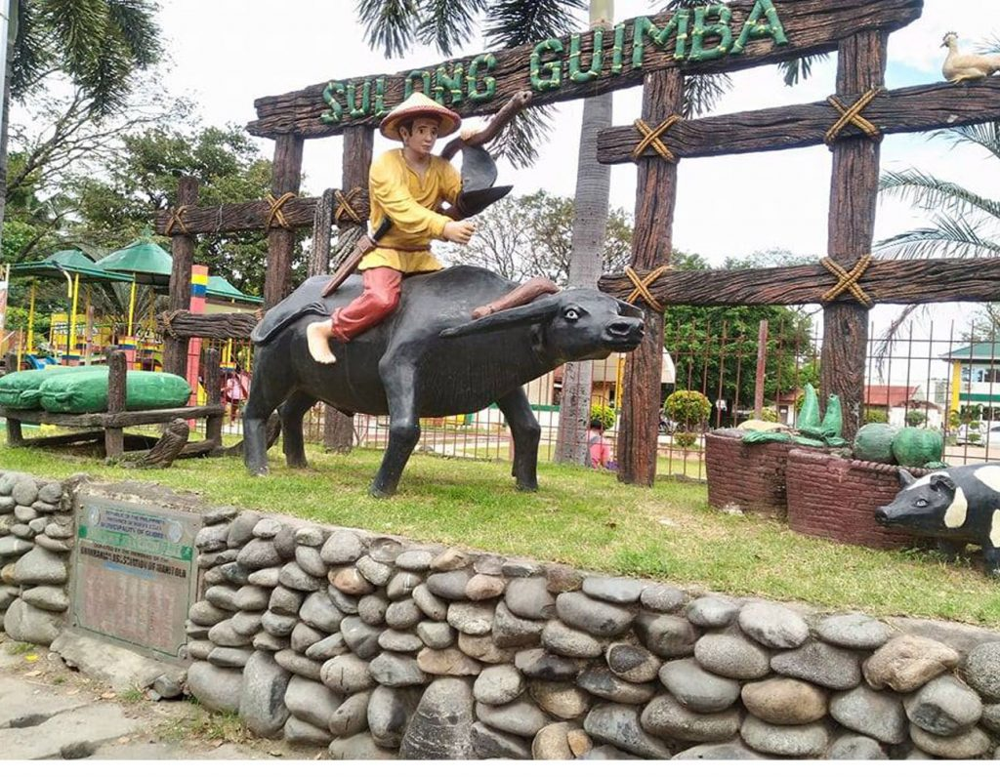

 | >
BRIEF HISTORY OF THE MUNICIPALITYGuimba was formerly a place of wilderness with virgin forests found in the north and south of the Binituan River. The vast plains north of this river were formerly a place where tall grasses grew, dotted by tall trees all over the area up to the place now called, San Andres. Frome this place northward to Talugtug, is a dense forest where bounty wildlife existed. The original settlers mostly came from Ilocos Region and Pangasinan. The pioneering clans were those of Ramones, Sawits and others. People from San Miguel and Bustos of the province of Bulacan also came, which can be traced from the descendants clans of the Dela Cruzes and De Guzman who settled in one of the barangays of Guimba, now called San Miguel. Having found the soil productive for agriculture purpose, the early settlers cleared the place, cut down trees and burned vegetative growth. The trees were sawed into lumber out of which their houses were constructed. A part from agriculture, the people also engaged in pot I hardening clay pots was more popularly called “Gebba” pronounced in Ilocano accent. The original name of the municipality was San Juan in honor of their patron saint. When the natives were busy doing their potting activities, some foreigners passed by and asked the natives what the placed is called. Misinterpreting what the foreigners asked to the people said “Gebba” for thinking that the foreigners were asking what they were doing. The foreigners repeatedly pronounced Gebba with nasalized accent “Ghembha” which later spread and became popular. The leaders then we’re convinced to call the municipality San Juan de Guimba by preserving the old name with added popularized name the foreigners name the foreigners called place. On March 13, 1991, the Philippine Commission on Geography officially adopted the name San Juan de Guimba, which was later shortened and change to “GUIMBA” hence, the name that until now is being used. Guimba, originally had an area of more or less 29,000 hectares occupying some portions of Talugtug. When Talugtug was declared a town in 1948, some areas were taken that made the size of Guimba smaller. Before its formal creation and declaration as a municipality, Guimba was then a part and under the political jurisdiction of Aliaga, Nueva Ecija. |